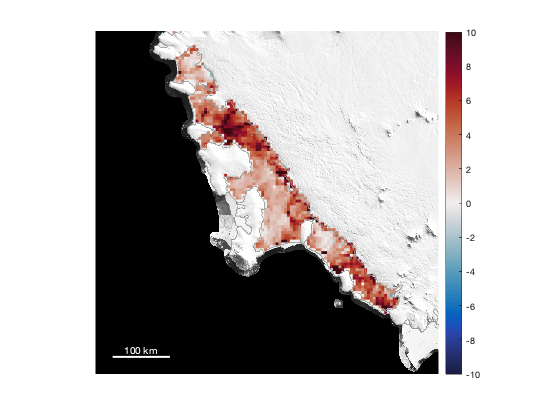
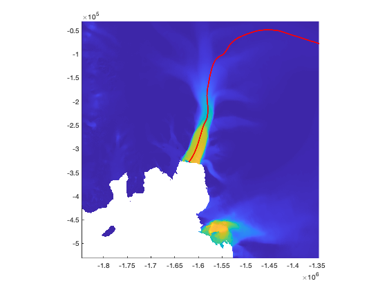
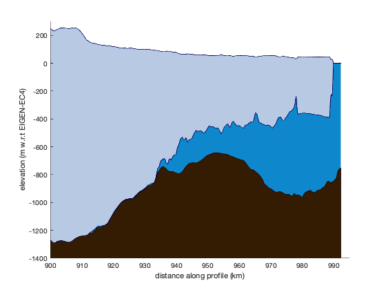
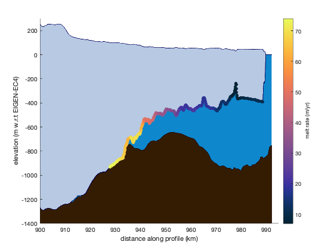

melt_interp_adusumilli documentation
melt_interp_adusumilli interpolates ice shelf melt rate data from Adusumilli et al., 2020.
Contents
Syntax
mi = melt_interp_adusumilli(lati,loni) mi = melt_interp_adusumilli(xi,yi) mi = melt_interp_adusumilli(...,'antialias',wavelength)
Description
mi = melt_interp_adusumilli(lati,loni) interpolates the composite melt rates (representing the years 2010-2018) at the geographic locations lati,loni.
mi = melt_interp_adusumilli(xi,yi) as above, but for the query points xi,yi in south polar stereographic meters.
mi = melt_interp_adusumilli(...,'antialias',wavelength) performs spatial antialiasing before interpolation. This option is provided because the raw data is distributed at 500 m resolution, but you may be interpolating to a coarser resolution grid. For antialiasing, a decent rule of thumb is to lowpass filter to a wavelength of twice the resolution of the query grid. In other words, if you are interpolating to a 3 km grid, use 6000 as the wavelength value to meet Nyquist. The antialiasing option uses the filt2 function from Climate Data Toolbox, and may take a couple seconds to compute.
Requirements
- The 500 m resolution static grid requires Antarctic iceshelf melt rate data which can be found at the UCSD repository under the Components heading.
- The timeseries data requires the Antarctic iceshelf height change data from the UCSD repository under the Components heading. But the time series does not actually contain melt rates.
- To anti-alias ice shelf before interpolation , this function also requires (Climate Data Tools for Matlab.
Example 1a: A grid
Suppose you want a 5 km resolution grid of melt rates for Getz Ice Shelf. We'll start by defining a 600 km wide grid, at 5 km resolution, with the psgrid function rom Antarctic Mapping Tools.
% Define a grid: [lat,lon] = psgrid('Getz Ice Shelf',600,5); % Interpolate: m = melt_interp_adusumilli(lat,lon); % Map it: figure pcolorps(lat,lon,m) axis tight off bedmachine % draws a coastline for context modismoaps('contrast','white') % background image cb = colorbar; caxis([-1 1]*10) cmocean bal scalebarps('color','w')
Example 1b: Antialiased grid
Now do the same as above, but apply a 10 km lowpass filter to antialias before interpolating from the 500 m grid to the 5 km grid. The antialiasing filter takes about 10 seconds on my laptop.
% Interpolate: ma = melt_interp_adusumilli(lat,lon,'antialias',10e3); % Map it: figure pcolorps(lat,lon,ma) axis tight off bedmachine % draws a coastline for context modismoaps('contrast','white') % background image cb = colorbar; caxis([-1 1]*10) cmocean bal scalebarps('color','w')
The antialiased map above looks very similar to the aliased version, albeit with a tiny bit less noise. My personal take is that the proper way to interpolate from a high-resolution grid to a low-resolution grid is to perform antialiasing; however, if my results change dramatically with versus without antialiasing, my findings probably aren't that meaningful.
Example 2: Melt rates along a profile
Let's look at the melt rate along a flowline of Pine Island Glacier. Start with this map for context:
figure mapzoomps 'pine island glacier' itslive_imagesc % plots ice speed
After plotting the map above, I used the coord function to get the coordinates (-1581526,-196704) of a grounded spot in the main trunk of PIG. I'll use that as a starting point to make a flowline:
[xi,yi,di] = itslive_flowline(-1581526,-196704); hold on plot(xi,yi,'r','linewidth',2)
figure bedmachine_profile(xi,yi) axis([900 995 -1400 300])
% Get basal meltrates along the flowline mi = melt_interp_adusumilli(xi,yi); bi = bedmachine_interp('base',xi,yi); hold on scatter(di{1},bi,30,mi,'filled') cb = colorbar; ylabel(cb,'melt rate (m/yr)') cmocean thermal % colormap
Citing this data
Please cite Susheel's dataset if you use this data! Also, this function does operate on the data, so if you don't mind, please also cite Antarctic Mapping Tools.
Adusumilli, Susheel; Fricker, Helen A.; Medley, Brooke C.; Padman, Laurie; Siegfried, Matthew R. (2020). Data from: Interannual variations in meltwater input to the Southern Ocean from Antarctic ice shelves. UC San Diego Library Digital Collections. https://doi.org/10.6075/J04Q7SHT
Greene, C. A., Gwyther, D. E., & Blankenship, D. D. Antarctic Mapping Tools for Matlab. Computers & Geosciences. 104 (2017) pp.151-157. http://dx.doi.org/10.1016/j.cageo.2016.08.003
Author Info
This function and supporting documentation were written by Chad A. Greene of NASA Jet P,,ropulsion Laboratory, October 2020.